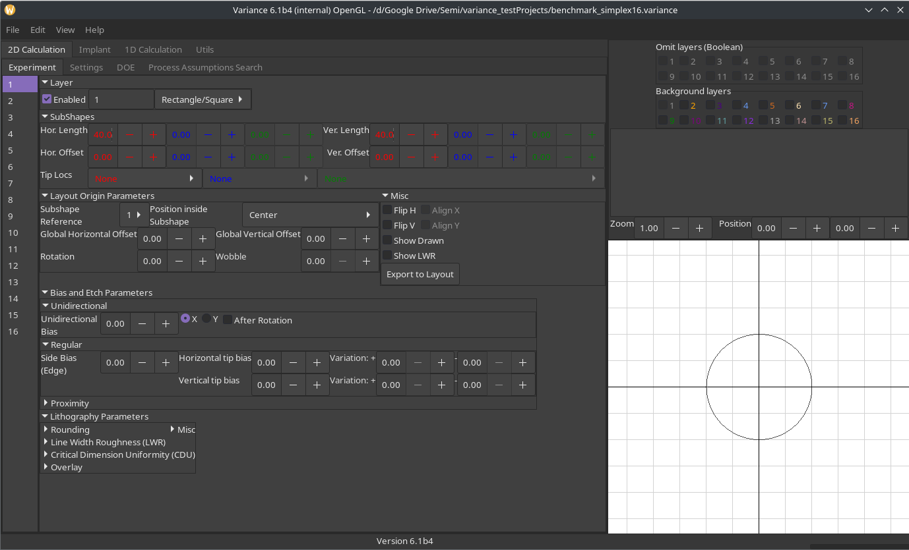
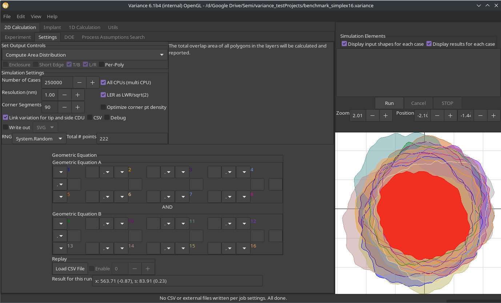

Variance Release History
New to 6.1 (Jun 12 2024)
 
- Moved to .NET 8.
- Updated viewport.
- Data preparation also sees major gains (> 10x) from broad and deep use of multithreading across all areas.
- Increased performance (> 2x) from moving data preparation into tasks and only updating buffers when required. More efficient drawing strategies were also deployed.
- With assistance from the Veldrid maintainer, new approach resolves issues with mesa/GTK under newer Linux environments.
- Currently, Vulkan does not seem to work well on Linux.
- GeoCore refinements:
- Improved handling of complex layouts.
- Previous code would read in irregular arrays, but would write a flattened representation, which was not ideal.
- New approach centralizes the handling of array data to make the code less complex.
- Repetition handling has been greatly improved and subject to extensive validation.
- Improved handling of compressed layout data following some runtime changes in the platform.
- Obscure bug in the box handling was found and addressed.
- Correctness review across the code.
- Migration and expansion of test coverage.
- Enhancements for overlap/enclosure handling.
- Fixed numerous UI irritations, including lingering UI elements on tabs where they are not relevant.
- Unidirectional bias available, using Minkowski Sum, with before/after rotation option.
- The Mac platform is no longer supported due to no user interest and no hardware.
New to 6.0 (Mar 23 2023)
Amongst other major changes, 5.0 moved from the Clipper 1.0 library to Clipper 2.0. This migration was performed within the existing representations, as the upgraded library was still seeing engineering and validation work for floating point values. With this tool update, we can now take advantage of this support to greatly simplify our code and system design, gaining major performance enhancements.
- Moved to .NET 7.
- Migration from GeoLib geometry to Clipper-native double precision representations.
- Massive refactoring effort, across multiple stable, complex systems and their interactions.
- Gains of up to 40% in performance by:
- Use of Clipper-native data structures throughout, avoiding conversions.
- Avoidance of copying data between representations.
- Avoidance of computational overhead by scaling geometry between representations.
- Code simplification and readability by single representation.